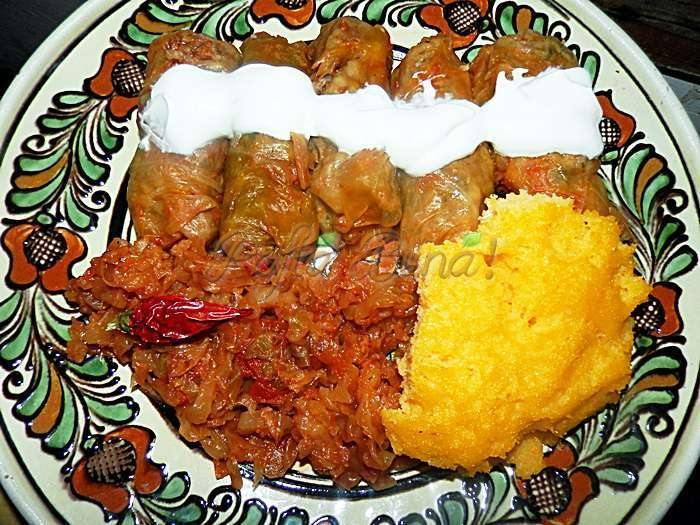

Sarmale
Reteta
Sarmale in foi de varza cu carne tocata si orez reteta taraneasca de sarmalute moldovenesti, reteta traditionala
moldoveneasca, reteta veche. Sarmale cu varza acra/murata sau varza dulce. Ce carne se foloseste la sarmale, cat
orez se pune la 1 kg de carne, cate sarmale ies dintr-un kilogram de carne, de ce ies sarmalele tari?
Se fac in multe feluri, fiecare gospodina are secretele ei, mai mult sau mai putin cunoscute, le face mai mult
sau mai putin gustoase, aromate, mai lunguiete sau mai rotunde, mai micute sau mai mari
Ingrediente
- pulpa porc - 500 g
- sau piept vita cu grasime-500 g
- poala de porc proaspata sau kaizer, slanina afumata - 200 g
- 2-3 cepe mari (cam 400 g ceapa)
- 100 - 150 g orez cu bob rotund
- 1 morcov mic
- 1 lingura telina radacina rasa
- 2 linguri malai
- >sare, piper, coriandru, cimbru, boia de ardei dulce, iute, ardei iute, chimen macinat
- >marar si patrunjel
- 1-2 linguri untura sau ulei
- pasta de tomate sau suc de rosii
- 1 cana cu vin alb (cam 200 ml)
- varza proaspata sau murata
Mod de preparare
- cumperi
- pregatesti
- gatesti
- mananci